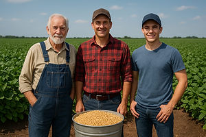
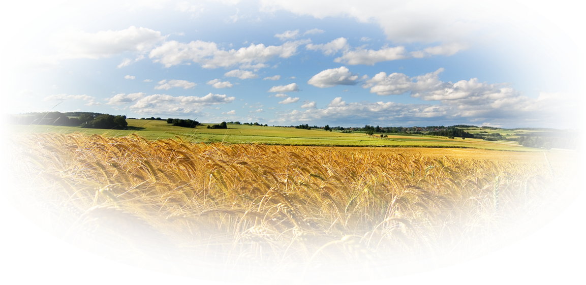
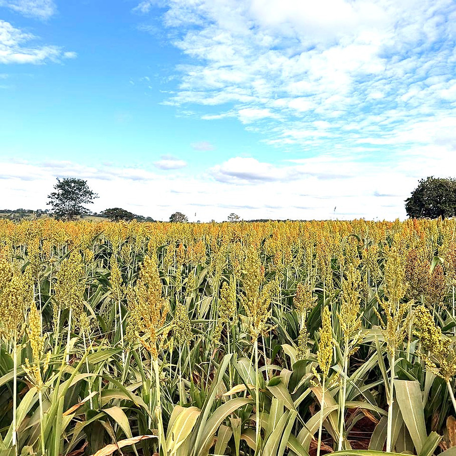
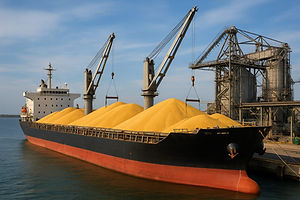

Generations of Experience
Deep farming roots in Brazilian soil.

From our family farms to world ports, AgroExpress delivers soybeans and corn with quality, integrity, and reliability.
AgroExpress Ltda.
AgroExpress Ltda. is a third-generation farming company built on decades of family tradition in Brazilian agriculture. From our roots as growers of GMO soybeans and corn, we have grown into a modern, independent agrobusiness proudly combining heritage with innovation.
Buy Brazilian Soybeans
AgroExpress supports buyers seeking Brazilian GMO soybeans for international import, bulk commodity programs, feed and processing supply chains, and future crop allocations. Our team can quote soybean purchases by volume, destination port, delivery terms, and packaging requirements.
Soybean Purchase Options
Why Choose AgroExpress?

Deep farming roots in Brazilian soil.

Licensed for international trade, delivering anywhere (ASWP).

Bulk or bagged, FOB or CIF options to fit your needs.

Strong partnerships with local growers to fulfill large and future orders.

Who We Are
Today, we own and operate three productive farms alongside the larger family-owned farmland, allowing us to cultivate and process crops at scale while maintaining our values of quality, reliability, and integrity.
We hold all Brazilian government export licenses and comply with international import requirements, ensuring that every shipment is secure, traceable, and globally compliant.
Explore MoreWhat We Do
Bulk and bagged GMO soybeans and corn.
FOB (Free on Board) and CIF (Cost, Insurance and Freight).
Any Safe World Port (ASWP).
Get in Touch